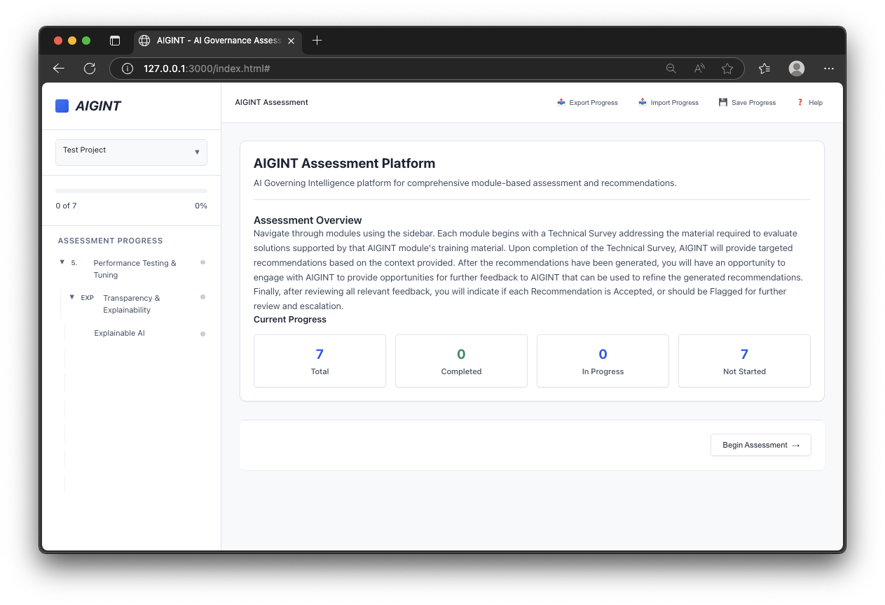
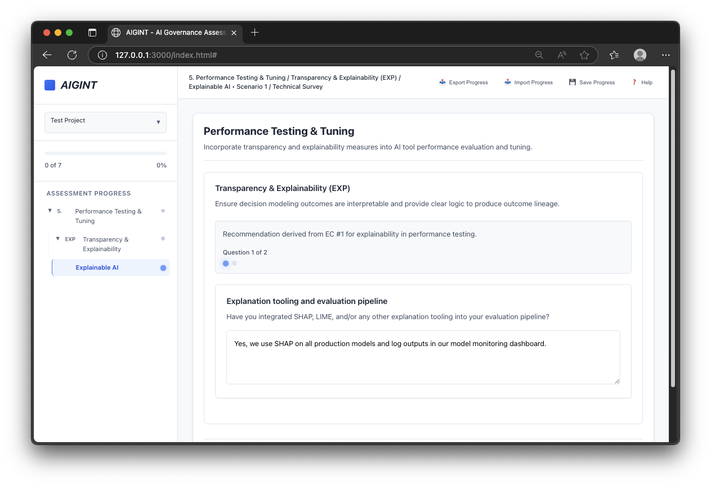
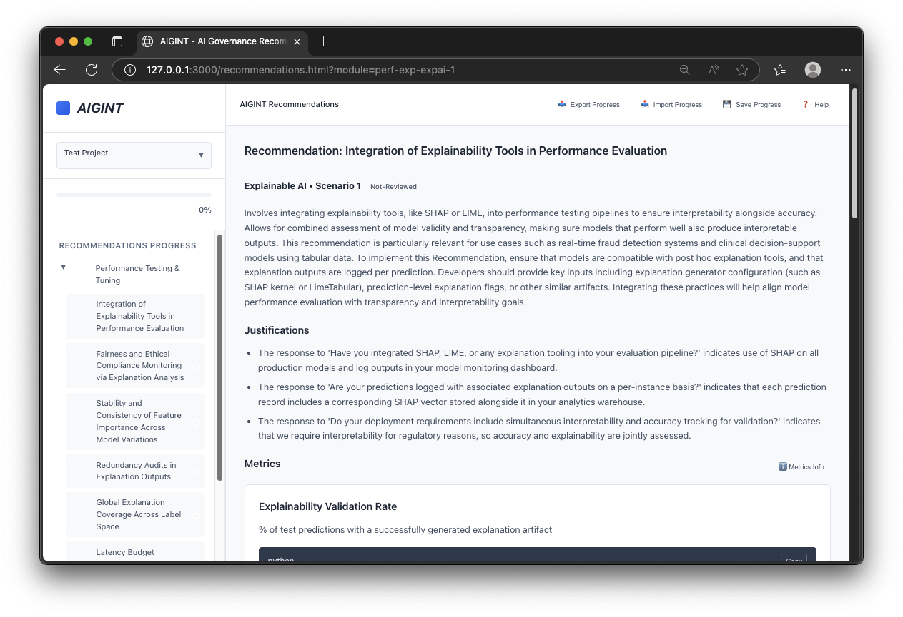
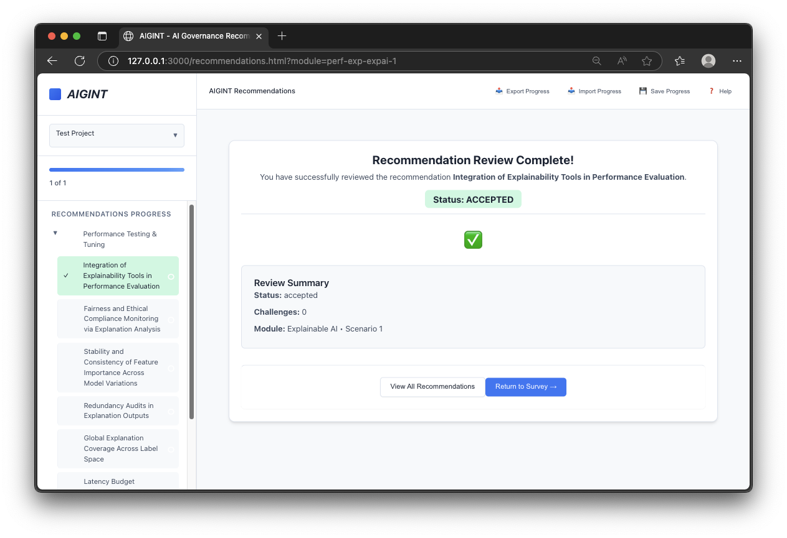

Case study in progress
Design Story · AI-assisted practice & speed
A services company’s first product.
AIGINT was an AI-governance product built inside a services company that had never shipped one of its own. I owned the experience end to end — UI, research, and a (frankly rough) front end I vibe-coded with an AI pair — and took it from a hundred pages of documentation to a working prototype in a matter of months.

The setup
A services company that had built plenty for its clients set out to build something of its own: AIGINT, a tool for navigating AI governance. I was the UI designer, the UX researcher, and the (admittedly pretty bad) front-end developer — everything that wasn’t data or back-end.
A hundred pages to a prototype
The starting material was about a hundred pages of rambling documentation. In a month it was a clickable prototype. Two months later, a semi-functional one: users could step through governance topics and export a generated PDF report. The front end was vibe-coded with Claude in VS Code against a GitLab repo — a very small team moving faster than a very small team should be able to.
What it cost us
The product was cancelled before release. The useful part is the lesson: with almost no user research up front, the hollowness of the underlying content took longer to surface than it should have. Speed is not a substitute for knowing whether the thing you’re building is worth building — and a little research early would have surfaced that sooner.
Walking through the prototype


